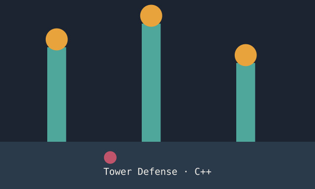
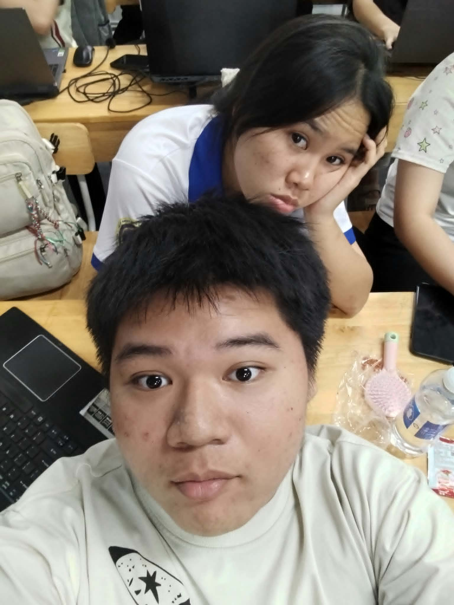
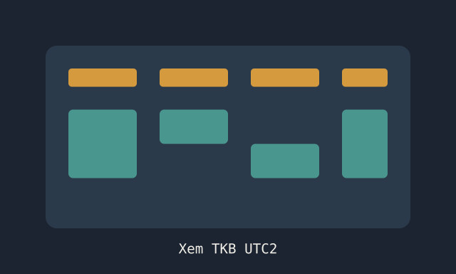
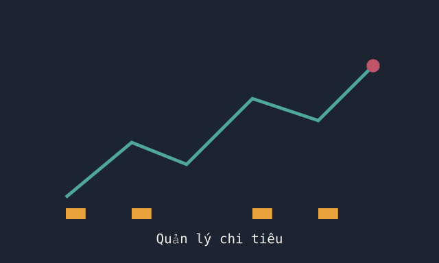

Game Tower Defense
Game phòng thủ tháp viết bằng C++, luyện tư duy thuật toán và quản lý bộ nhớ.
Xem chi tiếtMình là sinh viên ngành Công nghệ thông tin tại UTC2, đang từng bước xây nền tảng lập trình vững chắc để sau này trở thành một giáo viên Tin học. Ngoài giờ học, mình thích những chuyến đi vòng vòng khám phá phố phường, hoặc đơn giản là ở nhà làm dự án nhỏ.

Mình là Nguyễn Đức Tài, MSSV 6651071064, hiện đang theo học ngành Công nghệ thông tin tại Trường Đại học Giao thông vận tải – Cơ sở 2 (UTC2). Mình thích tìm hiểu cách mọi thứ vận hành phía sau một sản phẩm phần mềm, từ dòng code nhỏ nhất đến giao diện người dùng cuối cùng.
Định hướng dài hạn của mình là lấy thêm chứng chỉ sư phạm sau khi hoàn thành chương trình IT, để trở thành một giáo viên Tin học — người vừa hiểu công nghệ, vừa biết cách truyền đạt nó theo hướng dễ hiểu và gần gũi nhất cho học sinh.
Thời gian rảnh, mình dành để code những dự án cá nhân nho nhỏ, hoặc đơn giản là đi vòng vòng khám phá những góc phố mới — và khi không đi đâu, mình cũng rất vui khi được ở nhà yên tĩnh làm việc riêng.

Game phòng thủ tháp viết bằng C++, luyện tư duy thuật toán và quản lý bộ nhớ.
Xem chi tiết
Công cụ tra cứu thời khoá biểu nhanh gọn dành cho sinh viên UTC2.
Xem chi tiết
Ứng dụng theo dõi thu chi cá nhân, tập trung vào giao diện đẹp và dễ dùng.
Xem chi tiếtBắt đầu hành trình sinh viên ngành Công nghệ thông tin.
Rèn kỹ năng qua các dự án nhỏ như game, ứng dụng quản lý.
Định hướng học thêm sư phạm để trở thành giáo viên Tin học.
Mình chưa có bài viết nào — mục này sẽ được cập nhật sớm. Ghé lại sau nhé!